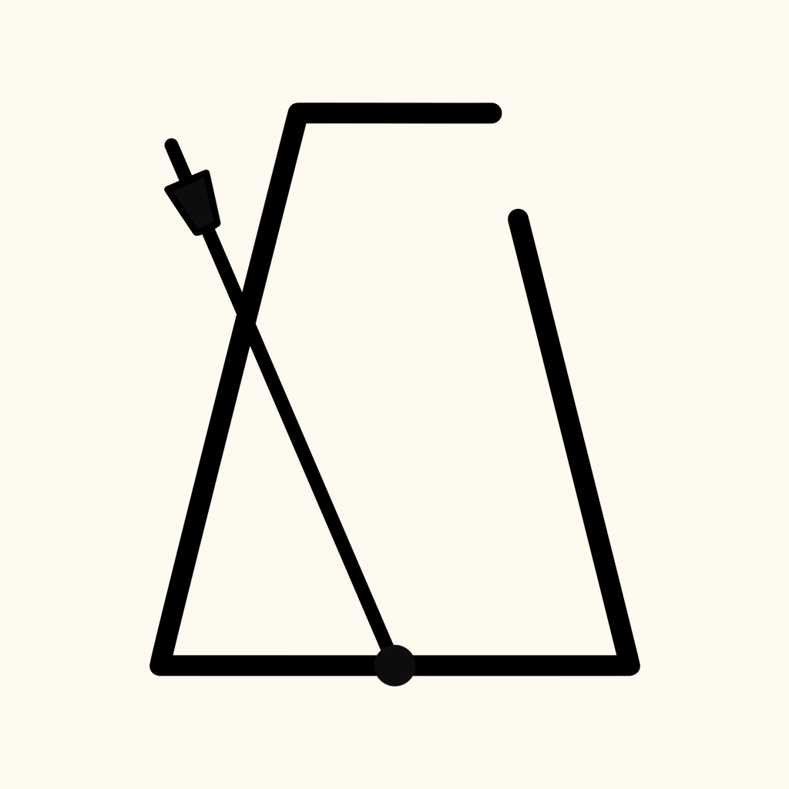
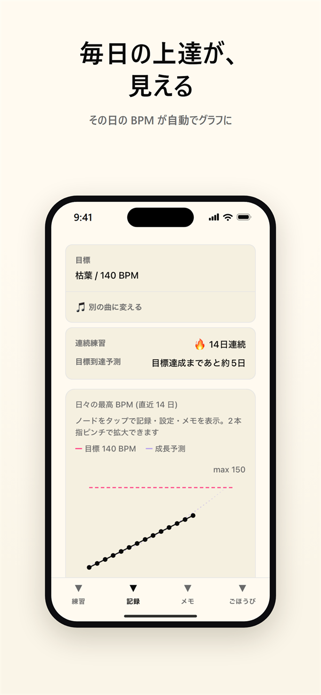
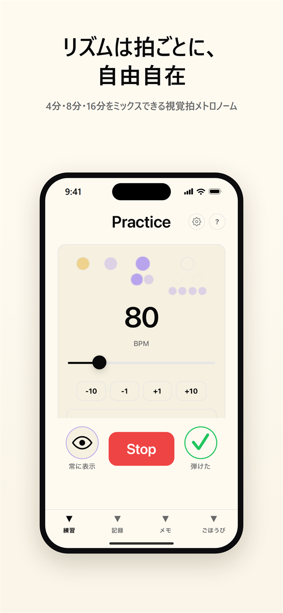
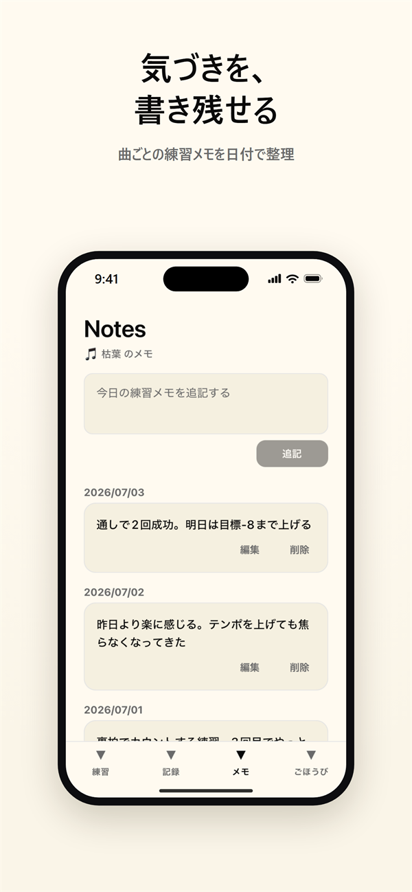
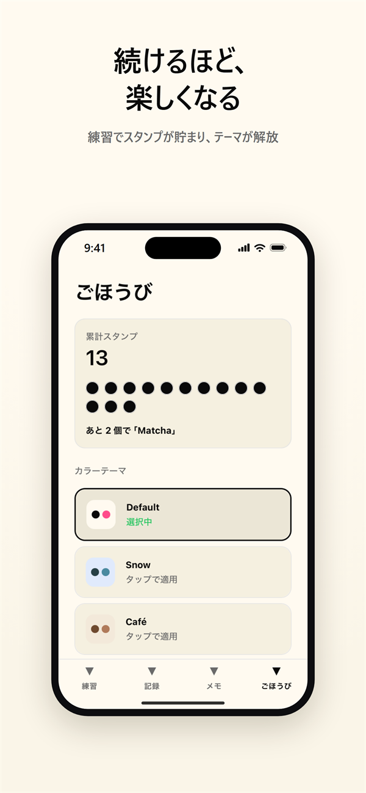

ミスよりノリ。
拍ごとにリズムを組めて、その日の到達 BPM がグラフに残る。
「鳴らすだけ」で終わらない、練習に寄り添う iPhone 用メトロノームです。




すべてのデータは端末内に保存され、アカウント登録は不要です。
¥0
メトロノーム機能はすべて無料。日々の BPM グラフ・練習メモ・プリセット3枠まで。
¥400 / 月
年額 ¥3,600（年額プランには7日間の無料トライアル付き）
テンポトレーナー／連続練習（ストリーク）と目標到達予測／プリセット無制限／写真テーマの先行解放
Your Metronome Pro は自動更新サブスクリプションです。お支払いは購入確定時に Apple ID アカウントに請求されます。 期間終了の24時間前までに自動更新をオフにしない限り、自動的に更新されます。 更新の管理・解約は購入後に App Store のアカウント設定から行えます。
Your Metronome は、acer8160 が開発した iPhone 用の練習メトロノームアプリです。メトロノーム機能は無料で、「✓弾けた」を押すとその日の到達テンポが記録され、日々の最高 BPM がグラフに残ります。
30〜300 BPM のメトロノーム、拍ごとの音符設定、変拍子、声カウント、日々の BPM グラフ、練習メモ、プリセット3枠までが無料です。テンポトレーナー、連続練習（ストリーク）と目標到達予測、プリセット無制限は月額 ¥400 / 年額 ¥3,600 の Your Metronome Pro に含まれます。
対応しています。4/4・3/4 の単純拍子に加え、6/8・12/8 の複合拍子、5/8・7/8（2+2+3）などの変拍子を設定できます。
できます。拍を長押しすると 4分 → 8分 → 16分 と深掘りでき、3連符や混在も「音符」ピッカーで拍ごとに設定できます。
「弾けた」ボタンでその日の到達テンポを記録すると、日々の最高 BPM がグラフになります。曲ごとの練習メモも保存できます。
どちらも不要です。すべてのデータは端末内に保存されます。
現在は iPhone（iOS 15.1 以降）のみの提供です。